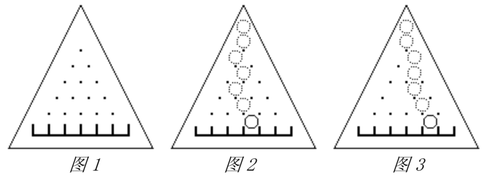

有一个三角形木板,竖直立放，上面钉着 $n(n+1)/2$ 颗钉子，还有 $(n+1)$ 个格子（当 $n=5$ 时如图 1）。每颗钉子和周围的钉子的距离都等于 $d$，每个格子的宽度也都等于 $d$，且除了最左端和最右端的格子外每个格子都正对着最下面一排钉子的间隙。
让一个直径略小于 $d$ 的小球中心正对着最上面的钉子在板上自由滚落，小球每碰到一个钉子都可能落向左边或右边（概率各 $1/2$ ），且球的中心还会正对着下一颗将要碰上的钉子。例如图 2 就是小球一条可能的路径。
我们知道小球落在第 $i$ 个格子中的概率 $p_i=C^i_n/2^n=\frac{n!}{i!(n-i)!}/2^n$，其中 $i$ 为格子的编号，从左至右依次为 $0,1,...,n$。
现在的问题是计算拔掉某些钉子后，小球落在编号为 $m$ 的格子中的概率 $p_m$。假定最下面一排钉子不会被拔掉。例如图3是某些钉子被拔掉后小球一条可能的路径。

 Comet OJ
Comet OJ